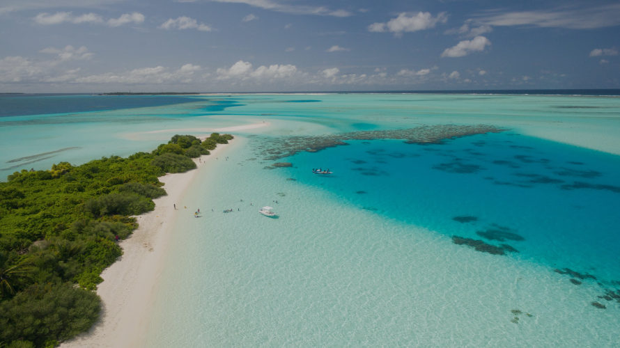
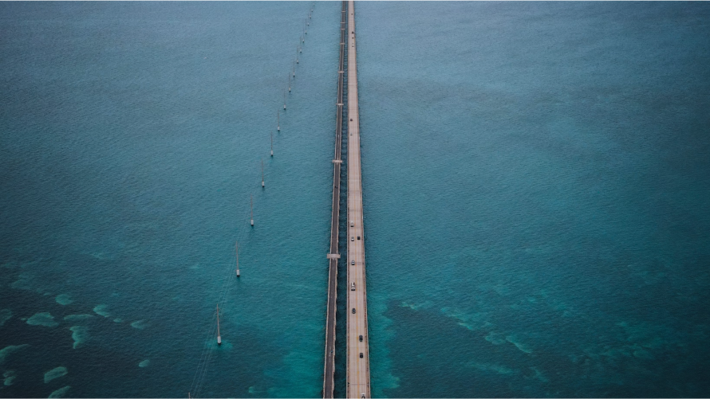
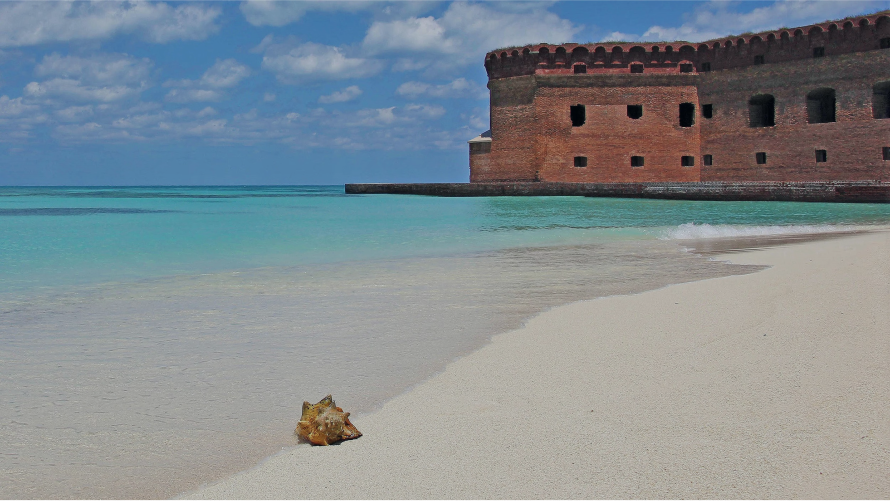

Preserving reefs,
nurturing harmony
We are not just an organization; we are a community united by a profound love for our oceans and a shared commitment to their preservation. We invite you to join us on a journey to explore, protect, and celebrate the wonders that lie beneath the surface.
Our mission
Our mission is to contribute to the harmonious coexistence of nature and people, with an unwavering focus on the preservation of coral reefs. We believe in the power of knowledge, advocacy, and sustainable practices to create a sustainable future. Through collaborative efforts and local initiatives, we aim to rehabilitate, protect, and inspire change.
What we do
From hands-on projects like coral restoration and beach cleanups to community outreach and educational programs, we actively engage in initiatives that inspire positive change.
Our key focus areas
These focal points encapsulate our strategic initiatives, representing the nucleus of our efforts in marine conservation and represent our commitment to the preservation and harmonious coexistence of coral reefs and the ecosystems they sustain.
Coral reef restoration and preservation.
Community empowerment and education.
Plastic-free oceans and environmental initiatives.
Advocacy for marine conservation.
Where we work
With a unique blend of marine life and ecosystems, we concentrate our initiatives on preserving and restoring coral reefs in Florida's coastal waters.
We believe in the power of local collaboration. Working closely with communities, researchers, and organizations in Florida, we strive to implement sustainable practices and raise awareness about the importance of protecting the delicate balance between nature and communities.
Regional programs
Topsail Hill Preserve
State Park

Nestled in the heart of Florida, Topsail Hill Preserve State Park is a crucial location for hands-on conservation projects and educational programs. Our initiatives here address the unique challenges faced by local coral reefs. Ongoing projects include coral reef monitoring, restoration activities, and community-based workshops. By engaging with the community and leveraging scientific expertise, we strive to implement sustainable practices that ensure the long-term health of the coral ecosystems in Topsail Hill Preserve.
Florida Keys
National Sanctuary

The ecologically diverse region of the Florida Keys National Sanctuary is a primary focus for our coral restoration and rehabilitation projects. These initiatives target specific coral species, employing advanced techniques such as coral gardening and outplanting. By collaborating with marine scientists and local organizations, we aim to rejuvenate and safeguard the coral reefs in this critical area. Our educational outreach programs also raise awareness about the importance that coral conservation has for the environment.
Dry Tortugas
National Park

The remote and pristine environment of Dry Tortugas National Park is a vital area for coral reef preservation efforts. Ongoing projects include research expeditions, coral mapping, and the implementation of sustainable tourism practices to protect the ecosystems. Through these initiatives, we contribute to the overall protection of the coral ecosystems in Dry Tortugas. Our commitment extends to fostering a deeper understanding of the balance between human activities and the preservation of these natural wonders.
Who we are
We bring together a diverse team of experts, scientists, and advocates who share a common goal: to protect and restore the delicate balance between nature and communities. Our initiatives extend beyond conservation, encompassing knowledge advocacy, sustainable practices, and global collaboration. Together, we work towards a future where coral reefs flourish, and our collective efforts contribute to a sustainable coexistence with our oceans.
Meet our board members
At the heart of the Blue Coral Foundation is a dedicated team of individuals, each contributing unique expertise and passion to drive our mission forward. Our diverse and experienced board members are committed to fostering a harmonious coexistence between nature and people, ensuring the longevity of our coral reefs
Dr. Aisha Malik
Marine Biologist
(Chairperson)
Dr. Elena Rodriguez
Environmental Lawyer
(Vice-Chair)
Luisa Moreno
Community Outreach
(Community Relations)
Rashid Bahl
Climate Scientist
(Climate Change Adviser)
Chris Thompson
Financial Analyst
(Treasurer)
Dr. Mei Wong
Environmental Analyst
(Policy Advocacy)
Michael Davis
Communications Specialist
(Public Relations)
Nathalie Morris
Marine Biologist
(Strategic Consultant)
Our partners
NOAA Coral Reef Conservation Program
Rescue a Reef University of Miami
Southeast Florida Coral Reef Preservation
Sign up for e-news
Stay informed and inspired by signing up for our newsletter. Receive updates on our latest projects, events, and coral conservation news.